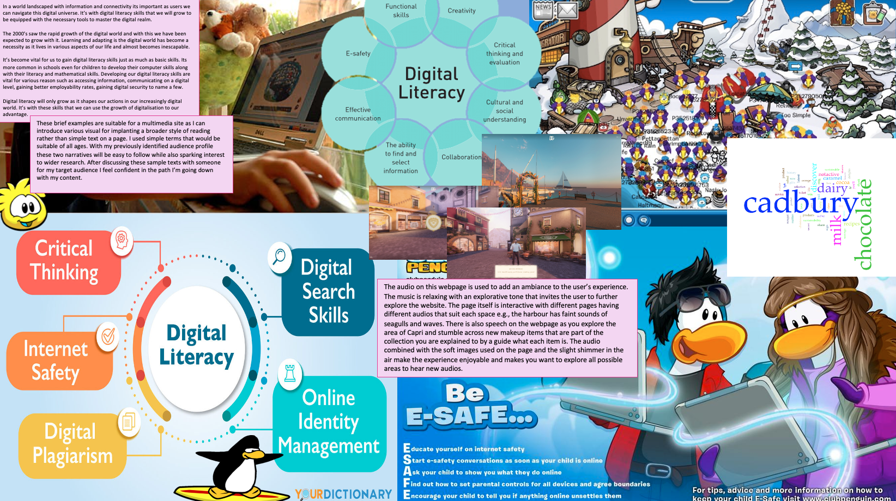

IL: Task 1
Website: Dolce&Gabbana Devotion Makeup Collection
The audio on this webpage is used to add an ambiance to the user’s experience. The music is relaxing with an explorative tone that invites the user to further explore the website. The page itself is interactive with different pages having different audios that suit each space e.g., the harbour has faint sounds of seagulls and waves. There is also speech on the webpage as you explore the area of Capri and stumble across new makeup items that are part of the collection you are explained to by a guide what each item is. The audio combined with the soft images used on the page and the slight shimmer in the air make the experience enjoyable and makes you want to explore all possible areas to hear new audios.


Updated Moodboard.
